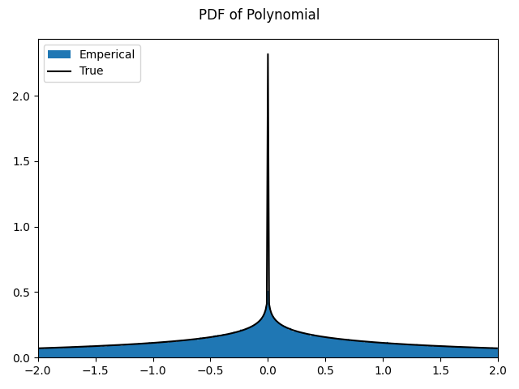
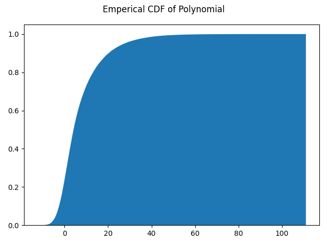
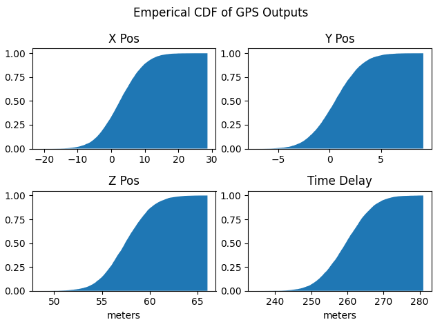

Data Fusion Examples
Gaussian Multiplication
The PDF of the multiplication of two zero mean normal PDFs follows a Normal Product distribution see here. For random variables \(X, Y\) with zero mean and standard deviations \(\sigma_X, \sigma_Y\) the product of their PDF follows the PDF given by
where \(K_0(z)\) is the modified Bessel function of the second kind.
1def multiplication():
2 import scipy.special
3 import numpy as np
4 import matplotlib.pyplot as plt
5
6 from serums.distribution_overbounder import fusion
7 from serums.models import Gaussian
8
9 std_x = np.sqrt(4)
10 std_y = np.sqrt(6)
11
12 x = Gaussian(mean=np.array([[0]]), covariance=np.array([[std_x**2]]))
13 y = Gaussian(mean=np.array([[0]]), covariance=np.array([[std_y**2]]))
14 x.monte_carlo_size = 1e6
15
16 poly = lambda x_, y_: x_ * y_
17
18 z = fusion([x, y], poly)
19
20 plt_x_bnds = (-2, 2)
21 pts = np.arange(*plt_x_bnds, 0.01)
22 true_pdf = scipy.special.kn(0, np.abs(pts) / (std_x * std_y)) / (
23 np.pi * std_x * std_y
24 )
25
26 fig = plt.figure()
27 fig.add_subplot(1, 1, 1)
28 fig.axes[0].hist(
29 z,
30 density=True,
31 bins=int(1e4),
32 histtype="stepfilled",
33 label="Emperical",
34 )
35 fig.axes[0].plot(pts, true_pdf, label="True", color="k", zorder=1000)
36 fig.axes[0].legend(loc="upper left")
37 fig.suptitle("PDF of Polynomial")
38 fig.axes[0].set_xlim(plt_x_bnds)
39 fig.tight_layout()
40
41 return fig
The above script gives this as output.
General Polynomial
Data fusion for a generic polynomial function can be performed as shown in the following script. Note Gaussians are used here
as an example however, any child of serums.models.BaseSingleModel can be used.
1def main():
2 import numpy as np
3 import matplotlib.pyplot as plt
4
5 from serums.distribution_overbounder import fusion
6 from serums.models import Gaussian
7
8 x = Gaussian(mean=np.array([[2]]), covariance=np.array([[4]]))
9 y = Gaussian(mean=np.array([[-3]]), covariance=np.array([[6]]))
10 x.monte_carlo_size = 1e5
11
12 poly = lambda x_, y_: x_ + y_ + x_**2
13
14 z = fusion([x, y], poly)
15
16 fig = plt.figure()
17 fig.add_subplot(1, 1, 1)
18 fig.axes[0].hist(z, density=True, cumulative=True, bins=1000, histtype="stepfilled")
19 fig.suptitle("Emperical CDF of Polynomial")
20 fig.tight_layout()
21
22 return fig
The above script gives this as output.
GPS Examples
An example of a real world application is GPS pseudorange measurements. Here it is assumed the reciever and satellite positions are known but the measured pseudoranges follow a Gaussian distribution. This is based on [7]. Note, a Gaussian is used for simplicity but any child of serums.models.BaseSingleModel may be used. The following script shows how to get samples from the fused distribution for output position and time delay. These outputs are often what is of interest instead of the measured pseudoranges. A linearized transformation from pseudoranges to positions is used.
1def main():
2 import numpy as np
3 import matplotlib.pyplot as plt
4 from numpy.linalg import inv
5
6 from serums.distribution_overbounder import fusion
7 from serums.models import Gaussian
8
9 # assume that user position and gps SV positions are known
10 user_pos = np.array([-41.772709, -16.789194, 6370.059559, 999.76252931])
11 gps_pos_lst = np.array(
12 [
13 [15600, 7540, 20140],
14 [18760, 2750, 18610],
15 [17610, 14630, 13480],
16 [19170, 610, 18390],
17 ],
18 dtype=float,
19 )
20
21 # define the noise on each pseudorange as a Gaussian (assume the same covariance for simplicity)
22 std_pr = 10
23 pr_means = np.sqrt(np.sum((gps_pos_lst - user_pos[:3]) ** 2, axis=1))
24 prs = []
25 for m in pr_means:
26 prs.append(
27 Gaussian(
28 mean=m.reshape((-1, 1)).copy(), covariance=np.array([[std_pr**2]])
29 )
30 )
31
32 # define the uncertainty matrix
33 R = np.diag(std_pr * np.ones(len(prs)))
34
35 # create the linearized GPS measurement matrix with a function
36 def make_G(user_pos_: np.ndarray) -> np.ndarray:
37 G = None
38 for ii, sv_pos in enumerate(gps_pos_lst):
39 diff = user_pos_.ravel()[:3] - sv_pos
40 row = np.hstack((diff / np.sqrt(np.sum(diff**2)), np.array([1])))
41 if G is None:
42 G = row
43 else:
44 G = np.vstack((G, row))
45 return G
46
47 # define the mapping matrix (this will be used in the polynomial)
48 G = make_G(user_pos)
49 S = inv(G.T @ R @ G) @ G.T @ inv(R)
50
51 fig = plt.figure()
52 [fig.add_subplot(2, 2, ii + 1) for ii in range(4)]
53 fig.suptitle("Emperical CDF of GPS Outputs")
54 ttl_lst = ["X Pos", "Y Pos", "Z Pos", "Time Delay"]
55
56 # define the fusion polynomial for each output variable (ie x/y/z pos and time delay)
57 for ii, ttl in enumerate(ttl_lst):
58 poly = (
59 lambda pr0, pr1, pr2, pr3: S[ii, 0] * pr0
60 + S[ii, 1] * pr1
61 + S[ii, 2] * pr2
62 + S[ii, 3] * pr3
63 )
64 # these samples could then be run through an overbounding routine
65 samples = fusion(prs, poly)
66
67 # plot the emperical CDF to view results
68 fig.axes[ii].hist(
69 samples,
70 density=True,
71 cumulative=True,
72 bins=int(1e3),
73 histtype="stepfilled",
74 )
75 fig.axes[ii].set_title(ttl)
76 if ii == 2 or ii == 3:
77 fig.axes[ii].set_xlabel("meters")
78
79 fig.tight_layout()
80
81 return fig
The above script gives this as output.
